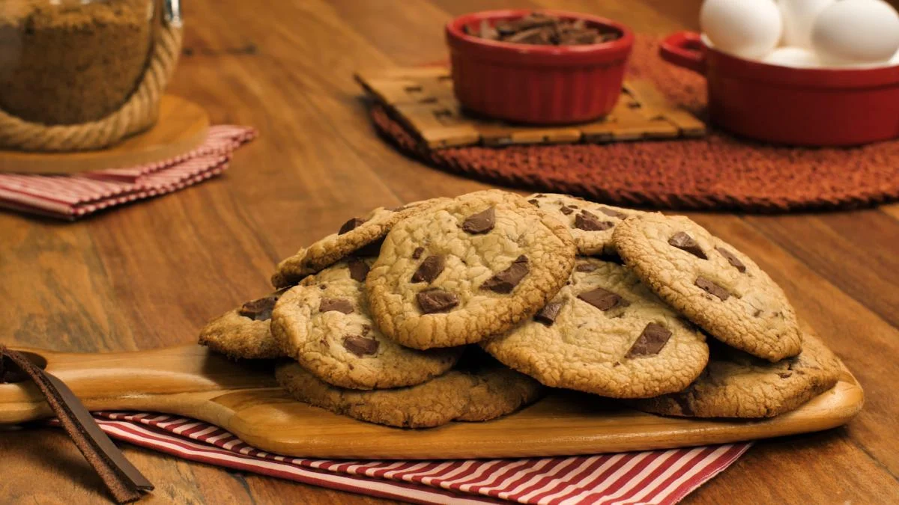

Cookie caseiro

Descriçao
Deliciosos cookies caseiros, simples de se fazer deliciosos de se degustar
igredientes
- 125g de manteiga sem sal
- 1/2 xícara de açúcar mascavo
- 1 ovo
- 300g de chocolate meio amargo picado
- 1/4 de chocolate em pó
- 3/4 de açucar
- 1 colher de fermento em pó
- 1 colher de essência de baunilha
Passo a Passo
- Misture a manteiga, açúcar mascavo, açúcar, essência de baunilha (e chocolate em pó, se for fazer cookies com base de chocolate).
- Adicione o ovo batido aos poucos e misture bem.
- Acrescente a farinha aos poucos e misture bem (pode ser na mão ou na batedeira planetária)
- Por último, adicione o fermento e misture só para incorporá-lo à massa.
- Depois da massa bem misturada, adicione o chocolate picado.
- Forme bolinhas pequenas e asse em forno preaquecido, sobre papel manteiga, por aproximadamente 15 a 20 minutos (250° C).